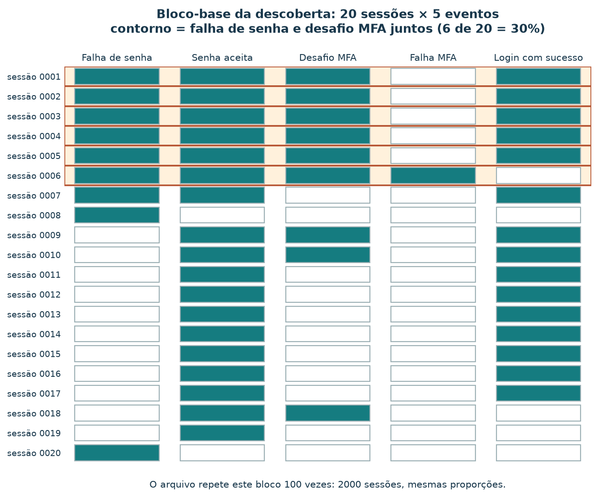
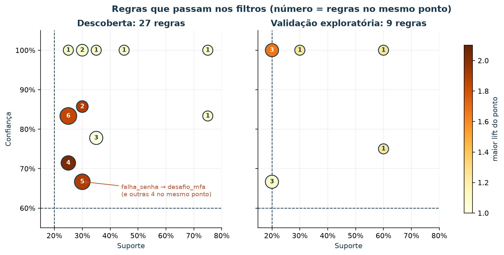
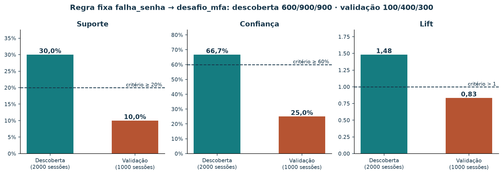
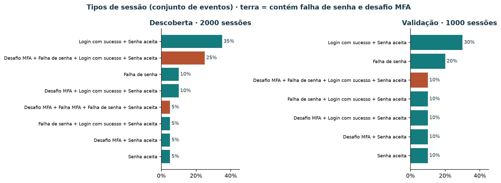

Regras de associação a partir de logs de autenticação
Ao concluir este roteiro, você conseguirá transformar linhas de log em sessões, calcular suporte, confiança e lift, minerar associações e avaliar uma regra fixa em outro conjunto. O objetivo é investigar o fluxo de autenticação de um servidor. Os registros são inteiramente sintéticos; não demonstram comportamento de pessoas, desempenho de um sistema real ou ocorrência de ataques.
Este é um estudo independente da variante
de compras. O catálogo, as dez cestas de compras,
pedidos e as vendas semanais permanecem inalterados. Os
logs não são a origem dessas compras ou desses totais. Aqui a unidade de
análise é uma sessão de autenticação fictícia, não uma compra.
1. Roteiro de 90 minutos
| Minutos | Atividade |
|---|---|
| 10 | Situar IA, aprendizado de máquina e associação |
| 15 | Ler o contrato dos logs e reconstruir sessões |
| 15 | Calcular suporte, confiança e lift |
| 10 | Executar a mineração e interpretar o CSV |
| 10 | Avaliar uma regra fixa em sessões separadas |
| 15 | Explorar sessões e regras no painel |
| 15 | Produzir um relatório e resolver o exercício |
Mineração de associações procura conjuntos frequentes sem uma resposta-alvo rotulada por sessão: é uma tarefa de aprendizado não supervisionado, dentro de aprendizado de máquina e IA. O algoritmo induz padrões a partir de exemplos; as pessoas escolhem a representação e os critérios. Consulte a seção 1 do tutorial original para o mapa conceitual e a discussão sobre sistemas especialistas.
Uma regra estatística descreve frequências. Uma política operacional como “SE ocorrer determinada condição ENTÃO encaminhar para revisão” é uma decisão adicional. Uma base de conhecimento, fatos do caso e um motor de inferência podem usar regras aprovadas em um sistema especialista; um CSV sozinho não constitui esse sistema. Estes exemplos não justificam bloqueio automático de contas.
2. A pergunta e o significado dos registros
Em quais sessões falhas de senha e desafios MFA aparecem juntos? MFA significa autenticação com múltiplos fatores. Nossa aplicação fictícia aceita senha e pode solicitar um fator adicional. Algumas sessões terminam sem sucesso.
Os arquivos de entrada estão em dados/logs-autenticacao/.
São JSON Lines: cada linha é um objeto completo, sem lista externa.
{"event_id":"descoberta-0001-01","timestamp":"2026-10-01T12:01:01+00:00","session_id":"descoberta-0001","evento":"falha_senha"}| Campo | Contrato |
|---|---|
event_id |
Identificador único de uma ocorrência; reentrega preserva o ID |
timestamp |
Data/hora ISO com fuso; datas construídas, não períodos observados |
session_id |
Identificador de uma tentativa de fluxo que pode conter vários eventos |
evento |
Uma das cinco categorias abaixo |
| Evento | Significado no cenário |
|---|---|
falha_senha |
Uma senha foi recusada; pode haver nova tentativa |
senha_aceita |
A senha foi aceita; não significa login concluído |
desafio_mfa |
O fator adicional foi solicitado |
falha_mfa |
O fator adicional foi recusado |
login_sucesso |
A autenticação terminou com sucesso |
Neste cenário, sucesso exige senha aceita; desafio exige senha aceita e falha MFA exige desafio. Há sucessos com e sem MFA. A ausência de sucesso representa um fluxo sem conclusão registrada; o log sozinho não explica o motivo. Não há usuários, senhas, tokens ou endereços IP. Uma sessão não equivale a uma pessoa: uma pessoa poderia abrir várias sessões em um sistema real.
3. Das linhas às transações
O pipeline usa a biblioteca padrão do Python:
- Ler cada linha, validando campos, strings, timestamp com fuso e categoria.
- Remover entregas exatamente repetidas pelo
event_id. Reutilizar o ID com conteúdo diferente causa erro, com arquivo e linha. - Agrupar por
session_id, incluindo sessões sem sucesso. - Guardar o conjunto de categorias presentes em cada sessão.
- Contar conjuntos frequentes, gerar regras e aplicar filtros.

Figura 1 — Cada etapa muda a unidade contada: linhas, eventos únicos, sessões, conjuntos e, por fim, regras. A quarta caixa, em destaque, é a escolha de representação que você faz antes de minerar.
Na sessão descoberta-0001, a sequência construída é:
falha_senha, falha_senha, senha_aceita, desafio_mfa, login_sucessoAs duas falhas têm IDs diferentes: são duas ocorrências, não duplicatas. A cesta usada pela mineração é:
{falha_senha, senha_aceita, desafio_mfa, login_sucesso}Uma reentrega da primeira linha aparece no fim do arquivo. Ela não acrescenta um evento único nem uma sessão. Repetições de categoria dentro da sessão também não aumentam sua presença. Já duas sessões distintas com o mesmo conjunto contam duas vezes. O denominador é o número de sessões, não o de linhas do log.
| Cenário | Linhas | Eventos únicos | Reentregas | Sessões |
|---|---|---|---|---|
| Descoberta | 5901 | 5900 | 1 | 2000 |
| Validação | 2401 | 2400 | 1 | 1000 |
O gerador repete 100 vezes o bloco-base original (20 e 10 sessões). As proporções permanecem; as contagens absolutas crescem na mesma proporção.

Figura 2 — Cada linha é uma transação; cada coluna, uma categoria de evento. Conte as células das colunas Falha de senha e Desafio MFA para reproduzir os denominadores da seção 4: 9 e 9 de 20, juntos em 6. Multiplicadas por 100, essas contagens viram 900, 900 e 600.
O JSON de saída mostra todas as sessões reconstruídas. A ordem das linhas não altera a mineração: timestamps servem à leitura do exemplo, mas não são usados para inferir sequência. A seta de uma associação não significa “aconteceu depois”. Para investigar ordem ou tempo entre eventos seria necessário outro método.
Em logs sem session_id, seria necessário definir uma
janela e uma chave de agrupamento. Agrupar apenas por IP pode misturar
pessoas; janelas diferentes podem produzir regras diferentes. Logs HTTP
comuns também podem não registrar os eventos internos necessários. Esta
versão usa sessões explícitas para tornar a construção auditável. Não
filtra apenas logins bem-sucedidos, pois isso mudaria a população e
excluiria justamente sessões com falha ou abandono.
4. Três métricas, três denominadores
Sejam A e B conjuntos não vazios e disjuntos. n(A) conta
sessões contendo todos os eventos de A; N é o total de
sessões.
| Métrica | Fórmula | Pergunta |
|---|---|---|
| Suporte | n(A ∪ B) / N |
Em que fração das sessões os dois lados aparecem? |
| Confiança | n(A ∪ B) / n(A) |
Entre sessões com A, quantas também têm B? |
| Lift | N × n(A ∪ B) / (n(A) × n(B)) |
Quanto a confiança supera a frequência geral de B? |
Na descoberta, para falha_senha → desafio_mfa:
- A aparece em 900 sessões.
- B aparece em 900 sessões.
- Ambos aparecem em 600 sessões.
N = 2000.
Portanto, suporte = 600/2000 = 30%; confiança =
600/900 ≈ 66,7%; lift =
(600/900)/(900/2000) = 40/27 ≈ 1,48.
Relato: “Falha de senha e desafio MFA aparecem juntos em 600 das 2000 sessões. Entre as 900 sessões com falha de senha, 600 incluem desafio MFA. Essa frequência é aproximadamente 1,48 vez a frequência geral de desafio MFA, de 45%.”
Aqui a inversa tem as mesmas métricas porque os dois eventos aparecem em 900 sessões cada. Isso não é uma propriedade geral da confiança: o denominador troca ao inverter a regra. Suporte e lift são simétricos para a regra inversa.
Lift > 1 indica co-presença acima da referência de independência na amostra; lift = 1 coincide com essa referência; lift < 1 fica abaixo. Confiança não é nível de confiança estatística, e lift > 1 não é teste de significância. Nenhuma métrica mede risco de ataque, causa ou efeito de uma mudança de política.
5. Executar e ler os relatórios
Na raiz, com Python 3, sem instalar pacotes ou iniciar o BentoML:
python3 scripts/minerar_logs_autenticacao.py
python3 scripts/minerar_logs_autenticacao.py --cenario validacaoOs comandos geram, em logs-autenticacao/,
um JSON com sessões, contagens e avaliação da regra fixa, e um CSV com
todas as regras que passam nos filtros de cada cenário. A avaliação da
regra fixa é calculada mesmo quando ela não passa nos filtros.
Critérios definidos para o exercício: suporte ≥ 20%, confiança ≥ 60% e lift > 1. Na descoberta isso exige pelo menos 400 sessões conjuntas. A seleção resulta em 27 regras; na validação exploratória, em 9 regras — os mesmos totais do bloco-base, porque a mistura de caminhos não mudou. Não compare somente esses totais para avaliar generalização: o tamanho da base também importa.
O script reutiliza a função de contagem do minerador original por
meio de um adaptador interno. Os eventos são seus itens; nenhuma cesta
de compras é lida. Enumera subconjuntos observados e suas partições: não
implementa Apriori. O custo é exponencial no número de categorias
distintas por sessão; mantenha a pequena representação deste exercício.
Os filtros usam frações exatas e o CSV arredonda na exportação para seis
casas. Suporte e confiança são proporções, não porcentagens. O CSV usa
total_sessoes e é ordenado por lift, confiança, suporte e
IDs.
| Exemplo na descoberta | Suporte | Confiança | Lift | Passa? |
|---|---|---|---|---|
| falha_senha → desafio_mfa | 30% | 66,7% | 1,48 | Sim |
| desafio_mfa → senha_aceita | 45% | 100% | 1,11 | Sim |
| falha_mfa → desafio_mfa | 5% | 100% | 2,22 | Não: suporte |
O segundo exemplo reflete uma dependência do fluxo construído: só se solicita MFA depois da aceitação da senha. O terceiro mostra por que confiança alta não basta: suporte fica em 5% (100 em 2000 sessões). Regras com vários eventos de cada lado exigem todos eles na sessão e podem repetir informações cobertas por regras simples. Ordenar por lift não define automaticamente prioridade operacional.

Figura 3 — O número dentro de cada círculo conta as regras que coincidem nessa posição; regras diferentes podem ter as mesmas métricas. A cor mostra o maior lift do grupo, não uma média. As regras com 100% de confiança refletem, em geral, dependências do fluxo construído, como desafio MFA → senha aceita.
6. Avaliar em sessões separadas
Fixe falha_senha → desafio_mfa antes de consultar a
validação.
| Base | N | n(A) | n(B) | Juntos | Suporte | Confiança | Lift |
|---|---|---|---|---|---|---|---|
| Descoberta | 2000 | 900 | 900 | 600 | 30% | 66,7% | 1,48 |
| Validação | 1000 | 400 | 300 | 100 | 10% | 25% | 0,83 |

Figura 4 — A mesma regra, fixada antes, recontada em sessões separadas. As linhas tracejadas são os critérios definidos na descoberta. Na validação as três métricas ficam abaixo deles; as contagens vêm dos dois arquivos JSON Lines.
Na validação, a regra não passa nos três critérios originais. Isso demonstra o procedimento com números construídos; não diagnostica mudança de um servidor real. As datas sintéticas de 1 e 2 de outubro apenas organizam o exercício e não são períodos observados. As sessões dos dois arquivos têm IDs distintos.
Selecionar muitas regras específicas pode favorecer coincidências da descoberta (sobreajuste). Uma representação restrita pode perder relações relevantes (subajuste), mas um filtro que exclui uma regra não basta para diagnosticá-lo. Variação amostral, política MFA, cobertura dos logs e população também podem alterar métricas. Estes logs são sintéticos e repetem o mesmo bloco-base: servem ao exercício, não a conclusões operacionais.
Não reajuste os critérios repetidamente na validação e depois a apresente como avaliação independente. O CSV de regras de validação é uma exploração opcional; a comparação principal acompanha a regra previamente fixada. Uma avaliação final após ajustes exigiria outras sessões reservadas. Em uso real, sessões incompletas na fronteira da coleta e perdas de eventos também precisam ser examinadas.
7. Do padrão à investigação
Uma hipótese seria verificar se tipos de fluxo ou políticas explicam a associação. Seria necessário conhecer a política aplicável e a cobertura dos registros antes de interpretar diferenças. Não conclua que falhar a senha causa um desafio MFA.
Uma mudança no fluxo de autenticação exigiria uma avaliação própria, com critérios de segurança, conclusão de login e atrito. Mineração descreve associações; avaliação em outra base examina persistência; avaliação de uma intervenção examina o efeito da mudança. Este tutorial realiza apenas as duas primeiras em dados sintéticos e não implementa detecção de intrusão nem recomenda relaxar MFA.
Modelo de relatório:
Analisamos 2000 sessões sintéticas, reconstruídas de 5901 linhas, com 5900 eventos únicos e uma reentrega. Cada item indica presença de uma categoria na sessão. Com suporte ≥ 20%, confiança ≥ 60% e lift > 1, obtivemos 27 regras. A associação falha_senha → desafio_mfa tem contagens 900, 900 e 600, suporte 30%, confiança 66,7% e lift 1,48. Nas 1000 sessões separadas, as métricas são 10%, 25% e 0,83. Propomos investigar o papel da política de autenticação. O cenário construído não permite atribuir causas, identificar ataques ou decidir bloqueios.
8. Explorar sessões e regras no painel
O explorador de logs reúne, numa só página, as etapas deste tutorial: a reconstrução de uma sessão a partir das linhas do arquivo, os tipos de sessão, a dispersão das regras, a comparação da regra fixa entre as bases e a tabela de auditoria. Você também pode usá-lo incorporado à versão web deste tutorial. Para estudar offline, abra o HTML a partir de uma cópia local do repositório; a página do arquivo no GitHub mostra o código. O roteiro de exploração descreve cada controle.
Explore sessões e regras neste tutorial
Reconstrua uma sessão, compare descoberta e validação e consulte as regras. Os logs são sintéticos.
O painel aplica as mesmas regras de contagem do script: agrupa por
session_id, descarta reentregas, guarda presenças e usa os
critérios de suporte ≥ 20%, confiança ≥ 60% e lift > 1. Os filtros
escolhem quais regras já selecionadas aparecem; eles não mineram regras
novas. O quadro da regra selecionada reconta a regra a partir dos tipos
de sessão de cada base, por isso mostra valores mesmo quando ela não
passa nos critérios.

Figura 5 — Espelho estático do painel “Tipos de sessão”. Cada barra é um conjunto exato de eventos. As barras em terra contêm os dois lados da regra fixa; somá-las dá o suporte dessa regra em cada base.
Atividade no painel
- Escolha a sessão
descoberta-0001. Quantas linhas o arquivo tem para ela e qual delas é descartada? Por que a segunda falha de senha não é descartada? - Em Tipos de sessão, some as barras em terra da descoberta e compare com o suporte da regra fixa.
- Na dispersão, selecione o círculo de suporte 30% e confiança 66,7%. Quantas regras ele reúne e quais têm lift diferente de 1,48?
- Na tabela, selecione Desafio MFA → Login com sucesso e leia a comparação entre as bases. A regra se mantém?
- Troque a base para Validação. Quantas regras passam nos filtros? A regra fixa aparece na tabela? E no quadro da regra selecionada?
Resolução comentada da atividade
- São seis linhas: as cinco ocorrências da sessão e a reentrega na
linha 5901, que repete o
event_iddescoberta-0001-01com o mesmo conteúdo. A segunda falha de senha tem outroevent_id: é uma nova tentativa, que não muda a presença da categoria no conjunto. - As barras em terra são 25% (500 sessões) e 5% (100 sessões): somam 30%, o suporte de falha_senha → desafio_mfa.
- Cinco regras. Quatro têm lift 1,48: falha_senha → desafio_mfa, a inversa, {desafio_mfa, senha_aceita} → falha_senha e falha_senha → {desafio_mfa, senha_aceita}. Nesta última, acrescentar senha aceita ao consequente não muda nada, porque todo desafio MFA já exige senha aceita: o consequente continua em 900 sessões. Só desafio_mfa → {falha_senha, senha_aceita} tem lift aproximadamente 1,90: seu consequente está em 700 sessões, uma referência menor que 900.
- Na descoberta: 700 sessões conjuntas, suporte 35%, confiança 77,8%, lift 1,04. Na validação: 200 de 1000, suporte 20%, confiança 66,7%, lift 1,11. Ela passa nas duas bases, mas com lift próximo de 1: a co-presença pouco supera a frequência geral de login com sucesso.
- Nove regras. A regra fixa não aparece na tabela da validação porque não passa nos filtros, mas o quadro da regra selecionada continua mostrando suas contagens 100, 400 e 300 e o lift 0,83.
9. Exercício e resolução
- Reconstrua a sessão
descoberta-0001e explique a diferença entre tentativa repetida e reentrega. - Calcule
desafio_mfa → login_sucessoe a inversa na descoberta. - Verifique os filtros e explique por que uma confiança de 100% pode refletir política.
- Recalcule a regra fixa na validação e escreva um relatório com limitações.
- Explique por que isso é associação não supervisionada e que etapa adicional seria necessária para investigar sequência temporal.
Resolução comentada
A sessão descoberta-0001 tem cinco eventos únicos e
quatro categorias. As duas falhas são ocorrências distintas; a reentrega
mantém o primeiro ID. Desafio aparece em 900 sessões; sucesso em 1500;
ambos em 700. Para desafio → sucesso: suporte 700/2000=35%,
confiança 700/900≈77,8%, lift
(700/900)/(1500/2000)=28/27≈1,04; passa. Para sucesso →
desafio, suporte e lift permanecem iguais, mas confiança
700/1500≈46,7% não passa. Sucesso → senha aceita tem
confiança 100% por construção do fluxo, não por descobrir um ataque. Na
validação da regra fixa: suporte 100/1000, confiança
100/400 e lift (100/400)/(300/1000)=5/6. Não
há rótulo-alvo por sessão, e os conjuntos descartam a ordem; estudar
sequência exigiria preservar e analisar a ordem dos eventos com um
método apropriado.
10. Reprodução e verificações
Os logs commitados permitem executar diretamente a mineração. Para reproduzi-los com o mesmo conteúdo e conferir os casos de erro e as contas:
python3 scripts/gerar_logs_autenticacao.py
python3 -m unittest discover -s scripts -p 'test_logs_autenticacao.py'Para outro log que cumpra o contrato, preserve os relatórios do exercício:
python3 scripts/minerar_logs_autenticacao.py --logs caminho/meu-log.jsonl --diretorio-saida material/logs-experimentoEsse comando usa os mesmos filtros e a mesma regra fixa. Os nomes de saída seguem o cenário selecionado, não a data do log personalizado. O parser verifica o contrato; não é um validador universal de políticas de autenticação. A coerência dos caminhos dos fixtures é conferida pelos testes. Fundamentos e referências de IA, métricas, generalização e validação estão no tutorial original.
As figuras e os dados do explorador usam Matplotlib e as mesmas funções do minerador. Com o ambiente do projeto instalado:
uv run python scripts/gerar_figuras_logs.py
uv run python scripts/gerar_bi_logs.pyO primeiro grava logs-pipeline.png,
logs-matriz-sessoes.png,
logs-dispersao-regras.png e
logs-descoberta-validacao.png em
material/imagens/. O segundo confere que as regras
recalculadas coincidem com os CSVs de
material/logs-autenticacao/ e grava
material/bi-logs/dados.js e
bi-logs-padroes.png.
Referências bibliográficas e roteiro de leitura
Consulta dos materiais on-line: 7 nov. 2026. Os livros podem exigir acesso por biblioteca; as fichas indicadas trazem sumário e apresentação.
Associação e mineração de dados
- AGRAWAL, Rakesh; IMIELIŃSKI, Tomasz; SWAMI, Arun. Mining association rules between sets of items in large databases. In: ACM SIGMOD International Conference on Management of Data, 1993, p. 207–216. DOI: 10.1145/170036.170072. Para aprofundar: a formulação original de suporte e confiança sobre transações.
- AGRAWAL, Rakesh; SRIKANT, Ramakrishnan. Fast algorithms for mining association rules. In: 20th International Conference on Very Large Data Bases (VLDB), 1994, p. 487–499. Artigo em inglês. Para aprofundar: o algoritmo Apriori e a poda por subconjuntos, que o script deste tutorial não implementa.
- HAN, Jiawei; KAMBER, Micheline; PEI, Jian. Data mining: concepts and techniques. 3. ed. Waltham: Morgan Kaufmann, 2012. ISBN 9780123814791. Ficha da editora; página dos autores. Para aprofundar: capítulos de padrões frequentes, avaliação de regras e medidas de interesse além do lift.
- MLXTEND. Association rules: association rules generation from frequent itemsets. Documentação em inglês. Para consultar: definições de suporte, confiança e lift usadas nas contas.
Logs, autenticação e avaliação
- KENT, Karen; SOUPPAYA, Murugiah. Guide to computer security log management. NIST Special Publication 800-92. Gaithersburg: NIST, 2006. Publicação em inglês. Para aprofundar: coleta, retenção e análise de logs, e por que cobertura e perdas de eventos afetam qualquer conclusão.
- OWASP. Logging Cheat Sheet. Guia em inglês. Para consultar: que eventos de autenticação registrar e o que nunca gravar em log, como senhas e tokens.
- OWASP. Multifactor Authentication Cheat Sheet. Guia em inglês. Para consultar: quando um sistema solicita um fator adicional, o que ajuda a interpretar regras que refletem a política, e não o comportamento.
- JSON LINES. JSON Lines text file format. Especificação. Para consultar: o formato dos arquivos de entrada, um objeto por linha.
- SCIKIT-LEARN. Common pitfalls and recommended practices. Documentação em inglês. Para consultar: por que ajustar critérios na base de avaliação torna a estimativa otimista.
Para começar, leia o guia de logging da OWASP e a seção de regras de associação de Han, Kamber e Pei; use o artigo de 1994 para estudar a mineração eficiente.